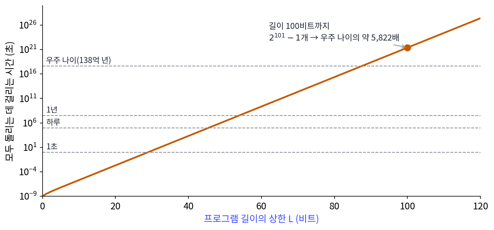
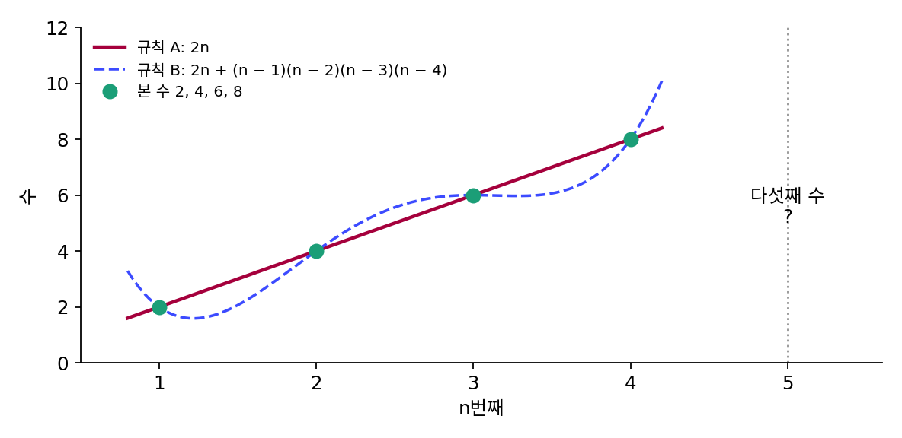
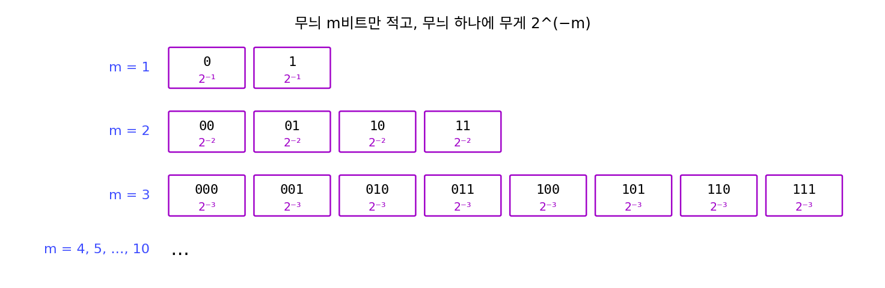
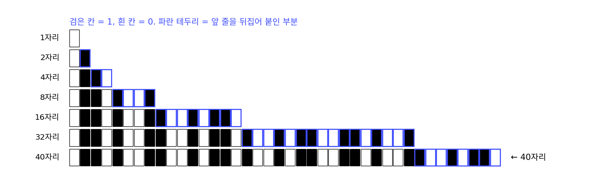
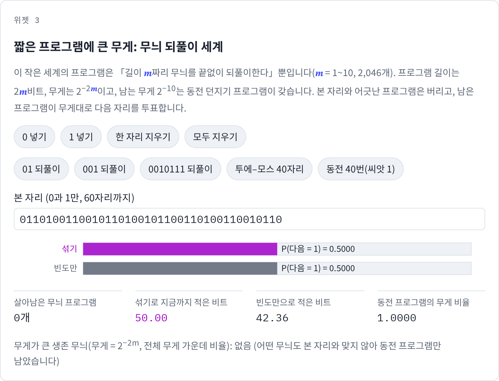

솔로모노프 귀납: 짧은 프로그램에 큰 무게
콜모고로프 복잡도는 이미 주어진 줄 하나의 규칙을 재지만, 학습이 바라는 것은 다음 값을 맞히는 일이다. 2, 4, 6, 8 다음에 무엇이 올까? 10이라고 답하는 사람이 많지만, 2, 4, 6, 8을 지나고 다음에 34가 오는 규칙도 얼마든지 지을 수 있으니, 본 자료와 맞는 규칙은 언제나 여러 개다. 그 가운데 어느 것을 믿어야 할지, 짧은 설명을 좋아하는 마음을 다음 값의 확률로 바꾸어 정할 수는 없을까?
역사: 예측에서 출발한 솔로모노프
솔로모노프(Ray Solomonoff)는 1956년 다트머스에서 열린 인공지능 여름 모임에 참가한 사람 가운데 하나였고, 기계가 경험에서 배우는 귀납 추론을 오래 붙들었다. 그는 1960년 2월 매사추세츠주 케임브리지의 회사 자토르(Zator)에서 보고서 「귀납 추론의 일반 이론에 대한 예비 보고서」를 냈다. 1964년에는 『Information and Control』에 「귀납 추론의 형식 이론(A Formal Theory of Inductive Inference)」을 두 편으로 나누어 실었는데, 두 글에서 그가 붙든 물음은 하나였다. 지금까지 본 기호 줄이 주어졌을 때 다음 기호의 확률은 얼마인가? 그의 답은 그 줄로 시작하는 출력을 내는 모든 프로그램을 모으고, 프로그램마다 길이가 짧을수록 큰 무게를 주어 더하자는 것이었다.
솔로모노프의 논문은 처음에는 크게 주목받지 못하다가, 1968년부터 콜모고로프가 그의 일을 먼저 나온 것으로 인용하면서 널리 알려졌다고, 2011년 그의 부고를 함께 쓴 두 연구자는 적었다. 무작위성에서 출발한 콜모고로프와 예측에서 출발한 솔로모노프가 같은 양, 가장 짧은 프로그램의 길이에 닿은 것이다.


모든 프로그램을 돌려서 무게를 더하면 된다니, 지금은 GPU를 잔뜩 붙이면 되지 않을까요?

길이 100비트까지만 잘라도 프로그램이 몇 개죠?

길이가 1비트 늘 때마다 두 배니까… 1 + 2 + 4 + … + 2^100, 2^101 − 1개요. 하나에 1나노초씩 돌려도 우주 나이의 몇천 배가 걸리겠네요.

개수만 문제가 아니야. 어떤 프로그램은 끝나지 않고 계속 돌 텐데, 기다려 보는 것만으로는 언젠가 끝날지 알 수 없잖아.

그래요. 끝날지 안 끝날지를 미리 가르는 일반적인 방법이 없다는 것은 튜링이 1936년에 보였어요. 솔로모노프의 답은 원리로는 분명하지만, 계산으로는 끝까지 갈 수 없는 답이었어요.

그럼 그때는 이 답이 다음 기호를 정말 잘 맞히는지 돌려 볼 수도 없었겠네요. 처음에 주목받지 못한 것도 그래서였을까요?
계산할 수 없다는 것과 주목받지 못한 일을 잇는 기록은 찾지 못했으니 짐작으로만 남겨 두죠.

모든 프로그램이 안 되면, 프로그램 종류를 몇 가지로 줄인 작은 세계에서는 직접 더해 볼 수 있지 않을까요? 짧은 프로그램에 큰 무게를 주면 정말 다음 자리를 잘 맞히는지요.
무늬를 되풀이하는 프로그램만 있는 세계
모든 프로그램을 다 모을 수는 없으니, 프로그램이 「길이 m짜리 0·1 무늬를 끝없이 되풀이하라」뿐인 작은 세계를 만들어 보자(계산은 sources/mdl/s4_solomonoff.py). 무늬 길이 m은 1부터 10까지, 무늬는 2^m가지라 프로그램은 모두 2,046개다. 프로그램을 끊어 읽을 수 있게 적으려면 무늬의 길이를 먼저 알려야 하니, 길이에 m비트, 무늬에 m비트를 써서 프로그램 하나의 길이는 2m비트다. 무게는 길이에 맞춰 2^(−2m)을 준다. 길이 m인 무늬 2^m개의 무게를 더하면 2^(−m)이고, m = 1부터 10까지 더하면 1 − 2^(−10)이다. 남는 2^(−10)은 어떤 무늬도 맞지 않을 때를 대비해 「매 자리 0과 1을 반반으로 던진다」는 동전 프로그램에 준다. 무게를 모두 더하면 꼭 1이고, 크래프트 부등식의 예산을 다 쓴 것이다.
예측은 이렇게 한다. 지금까지 본 자리와 어긋나는 프로그램은 버리고, 남은 프로그램이 다음 자리를 무게대로 투표한다.
- 아무것도 보지 않았을 때 P(다음 = 1) = 0.5다.
- 「0」을 보면 「1」로 시작하는 무늬가 모두 빠진다. 남은 무늬 가운데 무게가 가장 큰 것은 「0」(무게 1/4)이고, 「0」은 다음에도 0을 낸다. P(다음 = 1) = 0.25.
- 「0101」을 보면 「01」이 살아남은 가장 짧은 무늬다. P(다음 = 1) = 0.0278로, 다음은 0이라고 자신 있게 말한다. 빈도만 세는 예측기는 0과 1이 반반이라 0.5에 머문다.
- 「01010101」이면 P(다음 = 1) = 0.0001까지 내려간다.
「0010111」을 여섯 번 되풀이한 42자리를 이 섞기로 적으면 모두 14.00비트가 든다. 처음 열두 자리에서 0.01~3.6비트씩 쓰다가 열셋째 자리부터는 거의 0비트다. 빈도만 세는 예측기는 43.79비트를 쓴다.
이렇게 본 자료와 맞는 모든 프로그램에 2^(−프로그램 길이)의 무게를 주어 더해 다음 기호를 예측하는 방법을 솔로모노프 귀납 (짧은 프로그램에 큰 무게를 주는 예측 / Solomonoff induction)이라 한다. 줄 x로 시작하는 출력을 낼 확률은 다음과 같다.
다음 자리의 확률은 M(x1) ÷ M(x)처럼 두 무게 합의 비로 얻는다. 오른쪽 부등식은 맞는 프로그램 하나의 무게만으로도 M(x)이 2^(−길이)를 넘는다는 데서 나온다. 섞기가 준 확률로 잰 코드 길이 −log₂ M(x)은 맞는 가장 짧은 프로그램의 길이를 넘지 않는다(실제 산술 코딩은 여기에 많아야 2비트를 더한다). 「0010111」 되풀이에서 14.00비트가 무늬 프로그램의 길이 2 × 7 = 14비트에 닿은 것이 그 경우다. 섞기는 어느 무늬가 정답인지 미리 몰라도, 정답 무늬를 알고 적는 것보다 길어지지 않는다.
진짜 솔로모노프 귀납은 모든 프로그램을 더하므로, 그 안에는 원주율을 찍는 194바이트 프로그램도, 어떤 계산으로든 만들 수 있는 규칙도 모두 들어 있다. 그 대가로 M은 끝나지 않는 프로그램을 가려낼 수 없기 때문에 콜모고로프 복잡도처럼 계산할 수 없다. 작은 세계의 섞기는 계산할 수 있는 대신, 세계에 없는 규칙은 끝내 배우지 못한다(아래 문제 12).
ML에서: 솔로모노프 귀납을 신경망에 배게 하기
그라우모야(Jordi Grau-Moya) 외 딥마인드 연구자들은 「만능 예측기 배우기(Learning Universal Predictors)」(ICML 2024)에서 이 생각을 거꾸로 써 보았다. 만능 컴퓨터에 무작위 프로그램을 넣어 돌린 출력 줄들을 대량으로 만들고, 트랜스포머와 LSTM 같은 신경망에게 그 줄의 다음 기호를 맞히게 학습시켰다. 무작위 프로그램은 짧은 것이 더 자주 뽑히므로, 이런 자료로 다음 기호를 잘 맞히게 된 신경망은 짧은 프로그램에 큰 무게를 주는 솔로모노프 귀납을 흉내 내게 된다는 것이 그들의 논리다. 그들은 큰 모델일수록 이런 자료에서 배운 예측 전략을 다른 태스크로 옮겨 쓴다고 보고했다.
문제 10. 2, 4, 6, 8 다음은
수열 2, 4, 6, 8 다음 수를 묻는 퀴즈가 있다. 규칙 A는 「n번째 수는 2n」, 규칙 B는 「n번째 수는 2n + (n − 1)(n − 2)(n − 3)(n − 4)」다. (가) 두 규칙은 처음 네 수에서 같은가? 다섯째 수는 각각 무엇인가? (나) 「34」라고 답한 사람에게 틀렸다고 할 수 있는가? 짧은 설명의 눈으로 답하라.

계산해 보면 넷째까지는 뒤의 곱이 0이라서 둘 다 2, 4, 6, 8이에요. 다섯째는 A가 10, B가 10 + 4 × 3 × 2 × 1 = 34예요. 신기하네요. 그럼 34도 정답이에요?
34도 본 자료와 맞는 규칙에서 나왔으니 틀렸다고 증명할 수는 없어요. 그럼 왜 다들 10이라고 할까요?
규칙 B는 A에 항을 하나 더 붙인 거라 적는 데 더 길어. 본 자료 네 개를 둘 다 똑같이 설명하면, 짧은 규칙에 더 큰 무게를 주는 거지. 솔로모노프 귀납에서는 규칙이 몇 비트 길어질 때마다 무게가 그만큼 반으로 줄어드니까, 10에 훨씬 많은 확률이 가.

그러면 「34는 틀렸다」가 아니라 「34일 확률이 아주 작다」네요. 다섯째에 정말 34가 나오면 그때부터는 B가 살아남고요.

그래요. 짧은 설명을 고르는 건 확신이 아니라 무게를 매기는 일이에요. 자료가 늘면 무게는 바뀌어요.

조교님이 「이번 숙제는 지난번과 비슷하게」라고만 했으면 지난번 형식대로 내는 게 맞을 확률이 크지만, 공지가 바뀌면 새 공지를 따라야 하잖아요. 지난번 형식이 짧은 규칙 A고, 새 공지가 다섯째에 나온 34네요.
문제 11. 무게를 2^(−m)으로 주면
무늬 되풀이 세계에서 무늬 길이 m을 알리지 않고 무늬 m비트만 적는다고 생각해, 길이 m인 무늬에 무게 2^(−m)을 주자. (가) 길이 m인 무늬 전체의 무게 합은 얼마이고, m = 1부터 10까지 모두 더하면 얼마인가? (나) 무엇이 잘못되었고, 크래프트 부등식으로는 어떻게 말하는가?

길이 m 무늬가 2^m개고 하나에 2^(−m)이니까 길이마다 합이 1이에요. 열 길이를 더하면 10이요. 확률이 1을 넘었네요.
그 무게를 확률로 믿고 섞기를 하면 어떤 일이 생기죠?
확률로 쓰려면 10으로 나눠야 하는데, 그러면 무늬 하나의 무게가 2^(−m)의 10분의 1이 돼서 「무게 = 2^(−길이)」라는 약속이 깨져.
10으로 나누는 것 정도는 괜찮지 않아?
m을 100까지 늘리면 합이 100이 돼. 끝없이 늘리면 합도 끝없이 커져서 나눌 수조차 없어.

아, 무늬만 적으면 받는 사람이 「0」을 받고 무늬 「0」인지 「01」의 앞부분인지 모르잖아요. 끊어 읽을 수가 없어요. 길이를 먼저 알려야 끊어 읽히고, 무늬 길이를 알리는 비트까지 세야 2^(−길이)의 합이 1을 안 넘어요.

그래요. 짧은 프로그램에 큰 무게를 준다는 말은 프로그램들이 크래프트 부등식을 지키는 프리픽스 코드일 때만 확률이 돼요. 그래서 이 세계에서는 길이에 m비트를 더 써서 2m비트로 적었어요.

조화급수 1 + 1/2 + 1/3 + …이 발산하는 걸 처음 봤을 때처럼, 항 하나하나는 작아져도 항의 개수가 그보다 빨리 늘면 합이 끝없이 커지네요.
문제 12. 무늬 세계가 투에–모스 줄을 만나면
투에–모스 줄 0110100110010110…은 지금까지의 줄 뒤에 0과 1을 뒤집은 줄을 붙여 가며 만든다. 40자리를 무늬 되풀이 세계의 섞기로 적으면 50.00비트, 빈도만 세는 예측기로 적으면 42.36비트가 든다. (가) 섞기는 왜 빈도만 세는 예측기보다 긴가? (나) 이 40자리를 찍는 파이썬 한 줄
print(''.join(str(bin(i).count('1')%2)for i in range(40)))은 58바이트다. 진짜 솔로모노프 귀납이라면 어떻게 되는가? (위젯 3에서 「투에–모스 40자리」를 눌러 살아남은 무늬가 어떻게 사라지는지 보자.)

위젯에서 눌러 보니까 「0110」까지는 「011」이 살아 있는데, 자리가 늘어날수록 무늬가 다 죽고 동전 프로그램만 남아요. 50비트면 동전 프로그램의 무게 2^(−10)에 10비트, 40자리를 반반으로 던지는 데 40비트예요.
투에–모스 줄에 규칙이 없는 걸까요?
규칙은 있어. 다만 되풀이 무늬가 아니야. 이 세계에는 되풀이 무늬 프로그램밖에 없으니까 투에–모스 규칙을 아예 표현할 수 없고, 그래서 동전으로 떨어졌어. 빈도만 세는 예측기는 적어도 0과 1이 반반이라는 건 맞히니까 그보다 나아.
(나)는 58바이트짜리 프로그램이 있으니까 진짜 솔로모노프 귀납에는 그 프로그램이 들어 있어요. 처음엔 헤매도 몇십 자리 뒤부터는 그 프로그램이 살아남아서 다음 자리를 맞히겠죠. 대신 계산할 수가 없고요.
그래요. 어떤 프로그램들을 후보에 넣느냐가 무엇을 배울 수 있느냐를 정해요. 후보를 줄이면 계산은 되지만, 후보 밖의 규칙은 영영 못 배워요. 신경망의 구조를 고르는 일도 같아요.
엑셀 함수만 아는 사람은 표에 없는 규칙을 못 찾는데, 코드를 짤 줄 알면 찾을 수 있는 규칙이 많아지는 거네요.
위젯 3에서 문제 12 설정을 다시 불러와, 살아남은 무늬가 몇 자리에서 모두 사라지는지 확인해 보세요.
